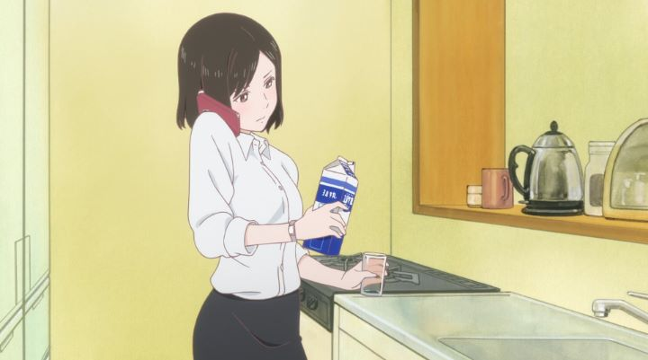

Disclaimer: This is a review for the 2016 4-short-episode series "She and Her Cat: Everything Flows," based on 1999 short film "She and Her Cat" by Makoto Shinkai.Makoto Shinkai is practically a household name in Japan today. But early on, he gained his reputation through hard work, famously animating the short film "Voices of a Distant Star" on his personal home computer. The quality of it, given the production background, and the rare and heartfelt perspective brought to the story, made Shinkai a distinct voice. But most fans would probably forget that he made a short film before that, called "She and Her Cat," in 1999 (today, it's commonly packaged as a bonus feature with either "Voices" or the feature film "5 centimeters per second").Anyway, the success of the 2016 feature film "Your Name." probably spurred a lot of new interest in those older works, and just in time, a television adaption of "She and Her Cat" released the same year. Shinkai is still credited, although it appears to be primarily as the copyright holder of the original work. This time around, a new director and studio Liden Films animated it. And the short, originally 5 minutes long, was now extended to a total of... 32 minutes long, across 4 episodes, each about 7 minutes. It's not exactly a big leap, is it?All the same, there isn't much content to draw upon, and either out of respect or laziness, "Everything Flows" doesn't try to add much else. Like the original short, the story is of a black cat and her young-adult female owner. The cat narrates what he sees from his perspective throughout. The woman's roommate just moved out to live with a boyfriend, and she's left alone, struggling to juggle both school and a job search. Like most young adults, she's exhausted, feels lost and hopeless, not certain of what will happen, despite doing her best to find her place. A second subplot is a bit of drama with her single-mother, who wants her to come back home, even though she herself insists on her independence and for her mother to move on to find a new husband. At home, the cat doesn't understand any of it, but has a deep love and appreciation for his master, and poetically ponders his role as her friend, fully understanding the importance for him to... do nothing in particular, other than just "be."The cat's narration and observations are much like the original short, and mostly in the style that Shinkai was known for. To have that stretched out beyond five minutes, "Everything Flows" can come across as either intentionally or unintentionally absurd. Generally though, the series is sweet and relaxing. Whatever drama the show has, it comes across as perfectly normal, refreshingly so for an anime, even if it seems much more profound to the feline.  Generally, cat lovers in particular would enjoy this, but there isn't much room to get into mischief. No scene stands out as being particularly funny, or sad, or amazing. In a couple moments, the subtlety is a huge bonus in its favor, but... I'm struggling to come up with a reason as to WHY "Everything Flows" was made. The original short conveyed the essential stuff that this does. And had it been stretched to a full 12-episode, 300 minute series? I can't imagine it being interesting enough to sit through, unless the cat was adorabley cute in every scene.The art and animation is argubably better than the original short, but it also doesn't compare to anything Shinkai had been a part of since "5 centimeters per second" and beyond. The cat is rendered realistically, but for pratical reasons, the hair is flattened for easier animation. Likewise, the girl is plesant, and I worried for her, but realism was the driving design. Even colors in the sky don't stand out in the way they ought to have. And animation is fine, but grounded, and purposely limited, again for practical reasons, as well as for the tone of the story. Normally, a short-series would never be released outside of Japan, but Discotek picked up the American license and even gave an English dub. The dub is fine, I suppose. That's the constant recurring phrase I go back to: everything's fine with "Everything Flows."Just fine. No better. "She and Her Cat - Everything Flows" has admirable restraint and respect for the original material, but it can come across as simply a lack of purpose or ambition. I suppose there's a large audience who can relate to the woman, and seeing that things work out eventually might make this a soothing, meditative passage for the soul. Personally, when it all ended, I felt almost exactly like the cat in his narration: "... in a moment like this, even though we can't understand each other, I'm certain we're thinking the exact same thing... it's time for dinner!"
- "Ani" More reviews can be found at : https://2danicritic.github.io/ Previous review: review_Seven_Mortal_Sins,_The_Seven_Heavenly_Virtues Next review: review_Shimoneta_-_A_Boring_World_Where_the_Concept_of_Dirty_Jokes_Doesn't_Exist